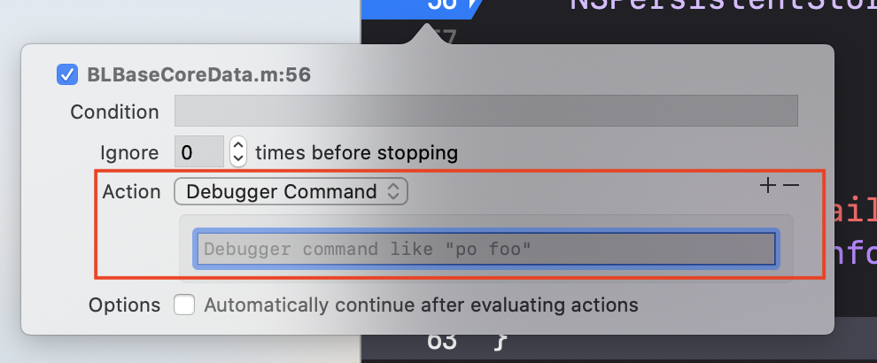

Advanced debug in Xcode and LLDB
Advanced debug in Xcode and LLDB
https://developer.apple.com/videos/play/wwdc2018/412
This session is awesome!
Configure behaviors to dedicate a tab for debugging
In Prefernece -> Behaviors , we can custom the debugging tab for ourselves. For example, choose Show tab named , fill in the name and choose active window . We will have a independent debug tab.

LLDB expressions can modify program state
By using auto-continuing breakpoints with debugger commands to inject code live, you can inject expression, change state or logic without compiling the project.
How to do it?
Click
Edit BreakPoint...Click
add action; the default option isDebugger Commandwe can write someLLDBcommand hereChoose the
Automatically continue, it will not pause when trigger this breakpoint.

Symbolic Breakpoint
Symbolic Breakpoint is one of my favorite tools to debug issues caused by others’ framework.
In the Breakpoint navigator , choose Symbolic Breakpoint .

Fill in any signature of the Objective-c method you want.

“po $arg1” ($arg2, etc) in assembly frames to print function arguments

In this case, we use Symbolic Breakpoint to hit the setText: in UILabe, but we don’t have the source code of UIKit. When the method is hit, we are in an assembly frame, we can use $arg to inspect the parameters. $arg1 is self pointer. $arg2 is the selector of the method. Others are arguements to the method. doc for objc_msgSend

Noted: we have to do typecast for the $arg2 , which is a Slector .

Create dependent breakpoints using “breakpoint set –one-shot true”
If a Breakpoint is frequently hit, Like the above breakpoint [UILabel setText:], usually we will edit conditions for this breakpoint. And then, this Breakppint will be hit only when the expression for the condition is true. However, when we don’t a property to make the condition expression. There is another way. We can add action one-shot symbolic breakpoint in a specific breakpoint, where it will be hit only once in the proper time.
The one shot breakpoint is a temporary breakpoint that only exists until it’s triggered and then it’s automatically deleted.

- Set a break point in line 96, where we might don’t want a break, but we can
configure this breakpointto actually set thesymbolic breakpointin UI label set text . choose
automatically continueThen add action ,
breakpoint set --one-shot true --name "[UILabel setText:]". Thisone-shot symbolic breakpointis activated only after this breakpoint in line 96 is hit.
How magical the dependent breakpoints are!
Skip lines of code
By dragging Instruction Pointer, the green handler in the following picture, we can skip lines of code. It means, these lines of code will not be executed.
Or we can use action int the breakpoint to skip this line of code for us.

After doing that, we can add expression to add new expressions, like calling other functions.
Pause when variables are modified by using watchpoints
- filter the variable we want using
fitler - click
Watch attempts
Then, we create a Watchpoint , which can be seen in the breakpoint navigator

Evaluate Obj-C code in Swift frames with expression -l objc -O -- <expr>
In swift frames, we can’t use pointers or private func as we do in obj-c frames. So here comes expression -l objc -O –
1 | // In swift |
By using the command alis , we can short cut it.
1 | command alis poc expression -l -objc -O -- |
Flush view changes to the screen using “expression CATransaction.flush()”
unsafeBitCast
We can use unsafeBitCast in Swift. To do the type cast, we have to provide the correct type.
Print its property or change its property:
Use CATransaction.flush to apply the view module changes to the screen’s frame buffer.
Add custom LLDB commands using aliases and scripts. Alias examples:
- download nudge LLDB script provided by the Apple. https://developer.apple.com/videos/play/wwdc2018/412/
- Add to
~/.lldbinit - Add custom alias in the lldbinit
1 | command alias poc expression -l objc -O -- |
Customizing Data Formatters
Author : RY Zheng
Link : https://suelan.github.io/2020/06/07/20200607-Advanced-debug-in-Xcode-and-LLDB/
License : MIT